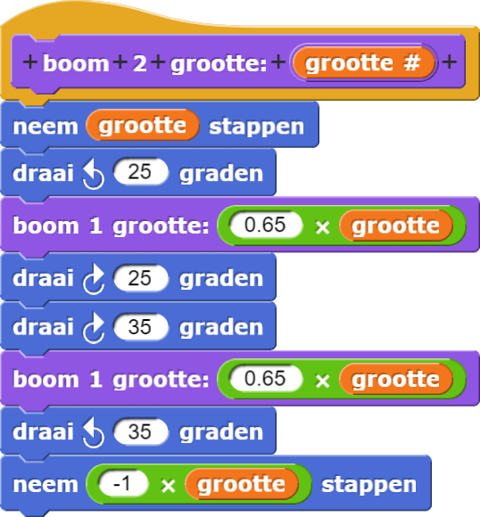
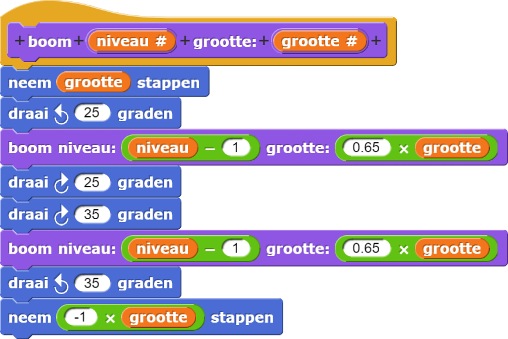
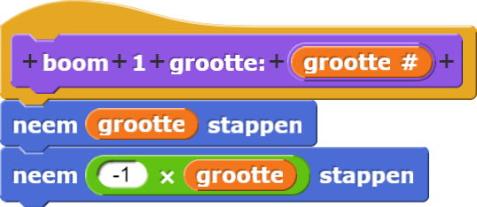
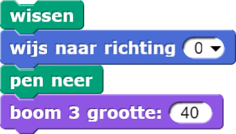
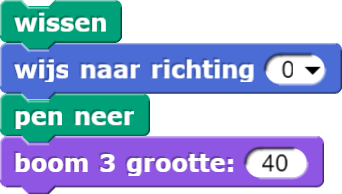

Het basisgeval
Een script dat zichzelf bevat is recursief.
Het lijkt logisch om alle identieke genummerde boom-scripts te vervangen door een enkelvoudig recursief
script met dezelfde structuur:

...

Maar het werkte niet:

Bo:
Aaarghhhh! Wat gaat er mis?!!!
Alex: Hij gaat maar door!
Yasmine: Nadat hij naar links draaide zou hij een kleinere boom moeten maken, maar dan
zou hij moeten stoppen en naar rechts draaien en daar ook een boom maken.
Bo: Oh ja, Yasmine! Hij gaat niet naar rechts!
Yasmine: Yep, bij iedere recursieve aanroep naar
boom tekent de sprite steeds
kleinere takken totdat hij alleen maar rondjes lijkt te draaien. Hij tekent nooit een rechter tak om de
boom af te maken waar hij mee bezig is.
Alex: Ik snap het. De oorspronkelijke genummerde blokken van
boom 1,
boom 2, enzovoort, zijn niet allemaal hetzelfde. De eerste, boom 1, is anders:
hij tekent alleen een lijn zonder takken en zet de sprite terug waar hij begon.
Alex wijst naar de code van boom 1 en naar de figuur die daardoor getekend wordt.


Bo: Dus ons blok voor de recursieve boom moet iets anders doen wanneer
niveau = 1 !
Yasmine: Yep! Hij moet alleen maar een lijn tekenen zonder een andere tak toe te voegen.
Dit speciale geval voor het laagste niveau van een recursief programma heet het
basisgeval.
Bo: Laten we eens met een eenvoudige boom nagaan om uit te zoeken hoe dit "basis geval"
moet werken. Kijk eens naar

boom 3met grootte 40.

Alex: Oké, na het schoonvegen van het speelveld en naar boven richten en de pen neerzetten
zet de sprite 40 stappen en draait daarna 25° naar links. En dan roept hij
boom 2 aan met
een kleinere grootte.
Bo: Goed. En
boom 2 , die bijna hetzelfde is, beweegt, draait en roept dan
boom 1 aan, die alleen maar een lijn tekent en terug gaat. Daarna moet de sprite van
boom 2 60° naar rechts draaien en nog een kleine boom 1 te tekenen en….
Yasmine: Ja, en omdat
boom 1 klaar is, wordt boom 2 beëindigd!
Dus het ziet er zo uit als boom 2 klaar is:

Alex: Yep. En dan draait het script van
boom 3 60° naar rechts en gebruikt
weer het hele scripts van boom 2 om de andere kant te maken. Daarna draait hij 35° terug en
beweegt achteruit naar het allereerste begin.

Bo: Dus zo eindigt
boom 3. Over dat "basisgeval" voor het recursieve
script… Het basis geval is het laagste niveau van de recursie, dus dat is zoals boom 1.
Alex: Yep,
tekent alleen een lijn en gaat niet nog een boom
maken.
boom 1. Bo: Dus we moeten ons recursieve
boom-blok een lijn laten tekenen op
niveau 1 in plaats van eindeloos kleine bomen te maken.